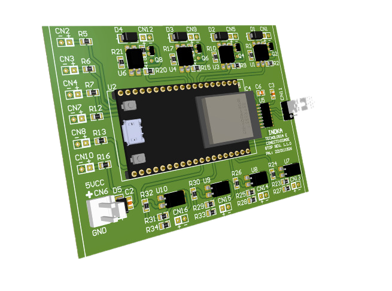
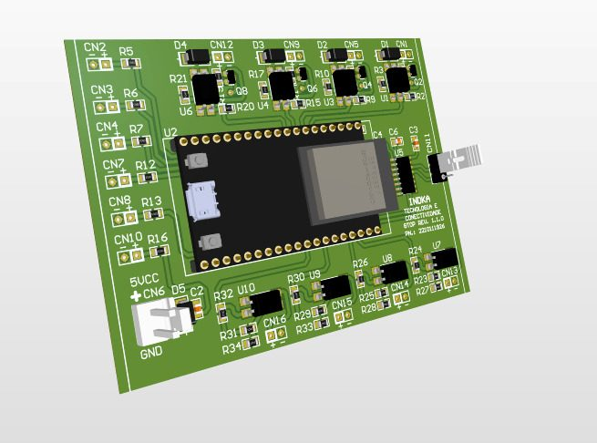
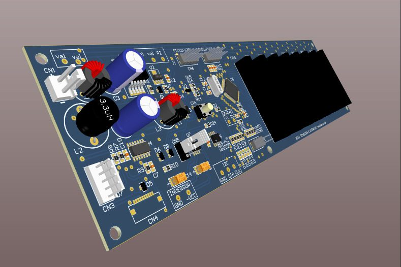
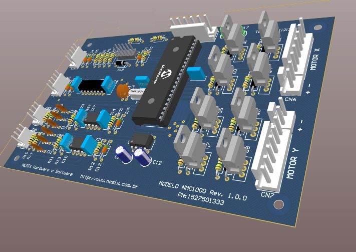
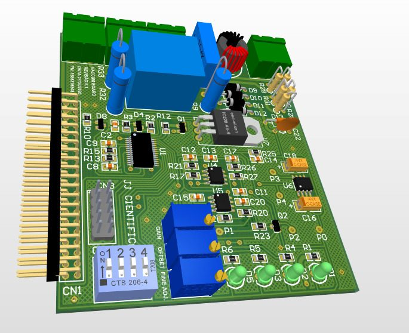
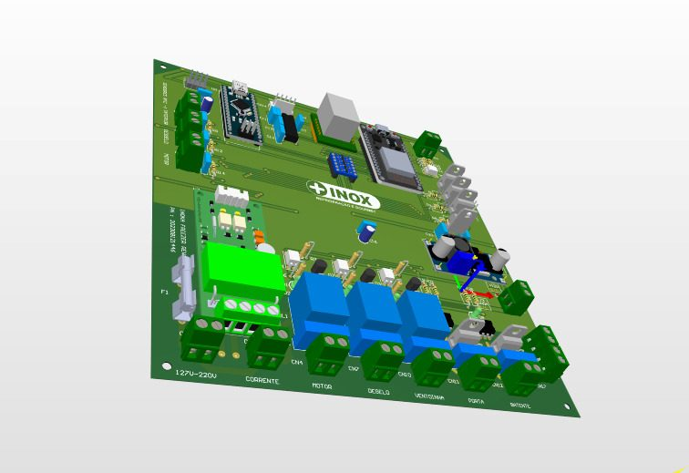
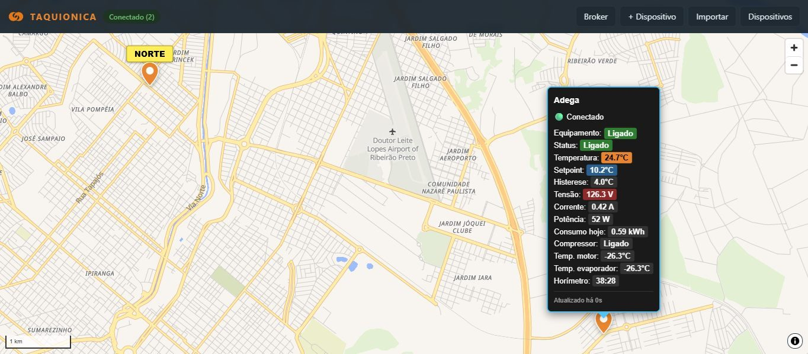
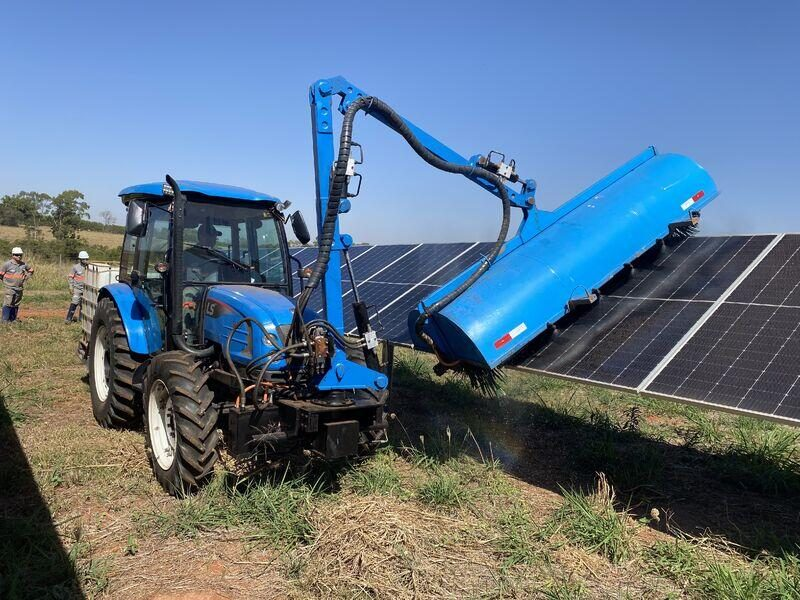

From the circuit board to the screen in your hand.
Taquionica designs the electronics, firmware and software that make equipment work, and keeps working, in the field. One team for every layer, so nothing gets lost between suppliers.
Engineering in Brazil for companies worldwide. NDA before the first technical call.

Output drivers ESP32Wi‑Fi and Bluetooth 5 V supply
- Since 2001
- our technical lead has designed electronic equipment
- 45+ units online
- running continuously for more than six years
- Updated remotely
- new firmware delivered to the fleet without a site visit
One engineering team for every layer of the system
Most equipment problems live between layers: the firmware that doesn't match the board, the app that doesn't match the firmware. We design the whole chain, so those gaps don't exist.
Hardware
Circuits, sensors, power stages and the printed circuit board, designed for the conditions the equipment will face.
Firmware
Code on the microcontroller that reads, controls, protects and communicates, and can be updated remotely.
Connectivity
Wi-Fi, Bluetooth, MQTT, Modbus and CAN, chosen for the site rather than the catalogue.
Software
Dashboards, phone apps and operator interfaces that turn readings into decisions and commands.
Services
Take the whole project to us, or only the part your team is missing. Each service has its own page with what's included and the questions companies usually ask.
Build
Design the electronics and the code inside your product.
- Electronic product developmentFrom an idea or a bench prototype to a product that works in the field.
- Hardware designCircuits, sensors, power and communication designed for the job the equipment has to do.
- PCB design and layoutSchematics, layout and manufacturing files, or a review of the board that keeps failing.
- Firmware developmentEmbedded code for microcontrollers, written, fixed or extended by the people who design the hardware.
Connect
Get data out of the equipment and into the hands of the people who decide.
- IoT and remote monitoringKnow what your equipment is doing without sending someone to look.
- Machine data collectionProduction, downtime and status read from the machine and delivered to a dashboard.
- Apps and dashboards for equipmentPhone apps and web dashboards to configure, follow and control your equipment.
- Industrial software and HMIOperator interfaces, integration with legacy machines and custom industrial software.
Improve
Automate, modernise and fix the equipment you already run.
- Industrial automationControl systems for motors, pumps, sensors and processes, designed for the scale of your operation.
- Machine retrofitKeep the mechanics, replace the electronics and control, and connect the machine to the plant.
- Technical diagnosticsAn engineering review of hardware, firmware and communication when equipment fails in the field.
- Electronic engineering outsourcingA technical arm for your team: the engineering the scope requires, without an idle payroll.
- Embedded electronics for field equipmentControl and telemetry for agricultural machines and implements that face vibration, dust and unstable power.
Equipment in operation
A selection of boards, apps and systems designed by Taquionica. Client names stay private: every project is delivered under confidentiality.







Our mission
Use technology to make the world a better place for everyone to live in.
Not as an abstract intention. Every monitored unit is food that doesn't spoil, medicine that keeps its effectiveness, energy that isn't wasted and a technician trip that no longer has to happen.
Our goal is to give companies technology of their own: equipment that is connected, processes that run without manual work, and data that turns into decisions. Well-made engineering reduces waste, gives people their time back and protects whoever is running the operation. That is the result we measure every project by.
- Connect equipmentso problems are seen before they become losses
- Automate tasksso people stop doing what a machine should do
- Turn data into decisionsso every choice rests on what really happens in the field
How a project runs
You know the scope, the timeline and the price before any development starts. After that, you follow each stage with the same person.
Understanding
You describe the idea, the equipment or the problem. We sign an NDA first if you need one.
Diagnosis
We assess requirements, risks, constraints and technical options.
Planning
Architecture, scope, stages, deliverables and price, agreed in writing.
Development
Hardware, firmware, software and communication, built and integrated by one team.
Testing
Operation, communication and stability validated on the bench and on the real equipment.
Delivery and evolution
Files, code and documentation delivered, with a plan for improvements and new features.
Engineering shaped by sectors where mistakes are expensive
Our technical lead started designing electronic equipment in 2001. The first twelve years were spent on regulated medical devices, under the requirements of ANVISA, Brazil's health regulator. We no longer take on medical projects, but the discipline stayed.
Next came vehicle monitoring for revenue control on toll roads, where a measurement error becomes lost revenue the same day. Taquionica was founded in 2016 to bring that standard to every project: protection and margin are never an afterthought.
You talk to one person from diagnosis to delivery. Specialists in power electronics, PCB layout, firmware, apps and integration join as each stage requires, so the team grows and shrinks with the project.
- Based in
- Ribeirão Preto, São Paulo, Brazil
- Working with
- Companies in Brazil and abroad, remotely
Questions companies ask before hiring us
Do you work with companies outside Brazil?
Yes. Engineering is done in Brazil; design files, source code and documentation are delivered digitally, and calls are scheduled across time zones.
Can you develop only one part of the project?
Yes. We can take the whole system or only the layer your team is missing: hardware, PCB, firmware, app or integration.
Can you improve equipment that already exists?
Yes. Many projects start with a product that works but needs new features, better reliability or connectivity.
How is confidential information protected?
We sign an NDA before the technical conversation when needed, and we never publish client names or project details.
How is the price defined?
Every project is sized to the real problem, so the price comes out of the technical conversation, not a table. You receive scope, timeline and price before development starts.
Do you manufacture boards?
We assemble the boards for the products we develop. We don't assemble boards designed by others; for PCB design work, we deliver production files for your manufacturer.
Tell us what the equipment needs to do
Fill in the form and it opens a WhatsApp conversation with our project manager, with your details already written. We reply within one business day and sign an NDA before the technical call if you need one.
- We work with companies only.
- Scope, timeline and price are agreed before development starts.
- We don't take academic, hobby, repair or maintenance work.
- Business hours in Brazil (UTC−3). Calls scheduled across time zones.